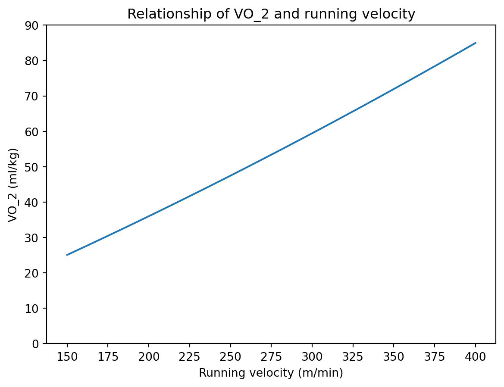

vo_2_function = lambda vel : - 4.6 + 0.182258 * vel + 0.000104 * vel ** 2Upon Shoulders of Colossi
Tutoring Olympians, he created a simple workout formula that was said to produce the best results with the least effort, earning accolades across the running world.
The New York Times and, in fact, virtually every media outlet has lauded Jack Daniels, Ph.D., with praise for creating the physiological basis of modern running theory.
However, the mathematical foundation of this formula is not easy to find.
Oxygen Power
As far as I know, the formula are not present in any version of Daniels’ Running Formula, and are instead on present in a specific edition of an earlier pamphlet named Oxygen Power (with a co-author named Gilbert)…
In a previous post I noted…
…but I have yet to get access to Oxygen Power and am relying on third party sources, namely Larry Simpson’s blog.
Thanks to a combination of my access to research library (the Mark O. Hatfield Library) and the practice of interlibrary loans, I was able to obtain a copy of the 1979 version of the pamphlet for the North Dakota State Library.
This is how I would cite it. I believe it was self published!
@book{daniels1979oxygen,
title={Oxygen Power: Performance Tables for Distance Runners},
author={Daniels, J. and Gilbert, J.},
year={1979},
publisher={J. Daniels, J. Gilbert}
}While I have been unable to verify this, rumors circulate that the original formula was present only in the 1979 release, and latter editions did not contain the formulas.
I am relative confident this is the case. In fact, in my copy of Oxygen Power, there is a citation to another work from Daniels: Conditioning for Distance Running - the Scientific Aspects. It was somewhat surprising to see that citation since I had already found that text, checked it out of the same library, and scanned it from cover-to-cover, finding no mention of any specific formula. This is mostly unfortunate for me since Conditioning has longer until its due date, and therefore more time to study, but the earth spins ever on.
Also, it’s anyone’s guess how long suspicious links last, but I did also a find unverified PDF that is superficially identical. Click at your own risk.
Appendix A
My copy of Oxygen Power was a total of 107 pages, with 7 pages making up the frontmatter. Of these, pages 9 through 93 through were tables generated from the now-much-beloved Daniels formula. Besides these, there were only 2 pages of introduction and a 13 page “Appendix A” which discussed the formula, included two pages listing the two equations that make up the formula:
- Relationship of \(\texttt{VO}_2\) and running velocity
- Relationship of \(\texttt{VO}_2\) max and duration of a distance race.
I’ll reproduce those here, and then if time permits append a discussion of the introduction and the textual contents of Appendix B.
I should note that now, at long last, I have verifed the blog post by Larry Summers (The Daniels/Gilbert Formula) is identical to the original source material.
Relationship of \(\texttt{VO}_2\) and running velocity
The \(\texttt{VO}_2\) over some velocity \(\texttt{Vel}\), in meters per minute:
\[ \texttt{VO}_2 = -4.60 + 0.182258 \times \texttt{Vel} + 0.000104 \times \texttt{Vel}^2 \]
It is a simple matter to express this in Python:
Oxygen Power additionally specifies the inverse relation, the velocity \(\texttt{Vel}\), in meters per minute, given some \(\texttt{VO}_2\). It would’ve been simple enough to derive, of course.
\[ \texttt{Vel} = 29.54 + 5.000663 \times \texttt{VO}_2 - 0.007546 \times \texttt{VO}_2^2 \]
It is a simple matter to express this in Python:
vel_function = lambda vo_2 : 29.54 + 5.000663 * vo_2 + - 0.007546 * vo_2 ** 2A visualization is also provided! We recreate it here:
import numpy as np
import matplotlib.pyplot as plt
Vels = np.arange(150,401)
Vo_2s = vo_2_function(Vels)
plt.plot(Vels,Vo_2s)
plt.title("Relationship of VO_2 and running velocity")
plt.xlabel("Running velocity (m/min)")
plt.xticks(np.arange(150,401,25))
plt.ylabel("VO_2 (ml/kg)")
plt.yticks(np.arange(0,91,10))([<matplotlib.axis.YTick at 0x1f1f3219c70>,
<matplotlib.axis.YTick at 0x1f1c74f05f0>,
<matplotlib.axis.YTick at 0x1f1f2fb7020>,
<matplotlib.axis.YTick at 0x1f1f3193ec0>,
<matplotlib.axis.YTick at 0x1f1f31896a0>,
<matplotlib.axis.YTick at 0x1f1f3188470>,
<matplotlib.axis.YTick at 0x1f1f318a930>,
<matplotlib.axis.YTick at 0x1f1f3016840>,
<matplotlib.axis.YTick at 0x1f1f31890d0>,
<matplotlib.axis.YTick at 0x1f1f3190320>],
[Text(0, 0, '0'),
Text(0, 10, '10'),
Text(0, 20, '20'),
Text(0, 30, '30'),
Text(0, 40, '40'),
Text(0, 50, '50'),
Text(0, 60, '60'),
Text(0, 70, '70'),
Text(0, 80, '80'),
Text(0, 90, '90')])
Aerobic Utilization
Larry Simpson calls this the “drop dead formula” which I find a bit morbid, but does capture the underlying truth that there is some physiological limit to pacing. I prefer to think of it as a maximum sustainable level of aerobic utilization. We imagine, for example, we can work harder for 1 minute than for 60 minutes. Larry Simpson presents the following, I believe also lifted from Daniels’ Oxygen Power.
Aerobic Utilization, over some time \(t\) in minutes:
\[ O_2\text{util}(t) = 0.2989558e^{-0.1932605t} + 0.1894393e^{-0.012778t} + 0.8 \]
It is a simple matter to express this in Python:
# We need the base of the natural logarithm, e
from numpy import e
# Larry Simpson Drop Dead Formula, attributed to Daniels/Gilbert
o_2_util = lambda t : 0.2989558 * e ** (t * -0.1932605) + 0.1894393 * e ** (t * -0.012778) + 0.8